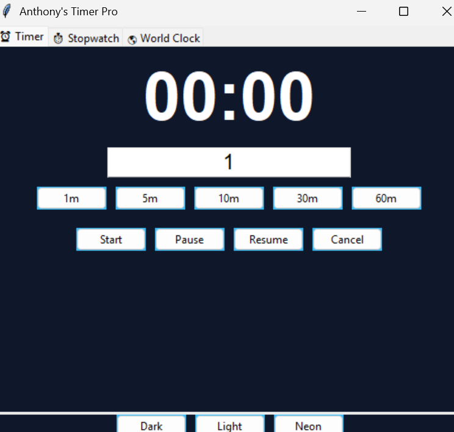

Anthony's Timer Pro — Official Download
Download Anthony's Timer Pro
Fast • Clean • Professional Desktop Timer Suite
⬇ Download for Windows
Version 1.0 • Windows 10 / 11 • Installer (.exe) • 15 MB
Having trouble downloading?
✔ Safe Download • No Ads • No Malware • Trusted Software
